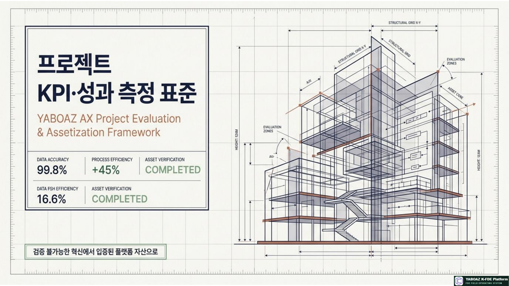
1. KPI는 성과를 설명하는 증거입니다
“업무 효율이 좋아졌다”는 말만으로는 의사결정자를 설득하기 어렵습니다. YABOAZ의 KPI는 기존 방식의 기준선, MVP 이후의 결과, 그리고 그 차이를 증명하는 데이터 출처를 함께 기록합니다.
기존 방식은 얼마나 걸리고 얼마나 틀렸는가
MVP·워크플로 적용 후 무엇이 달라졌는가
로그·관찰·설문·승인·시스템 데이터
다음 프로젝트에서도 재사용할 수 있는가
측정하지 않은 개선은 성과로 주장하지 않습니다. 모든 KPI에는 정의, 공식, 출처, 측정 주기, 책임자, 통과 기준이 있어야 합니다.
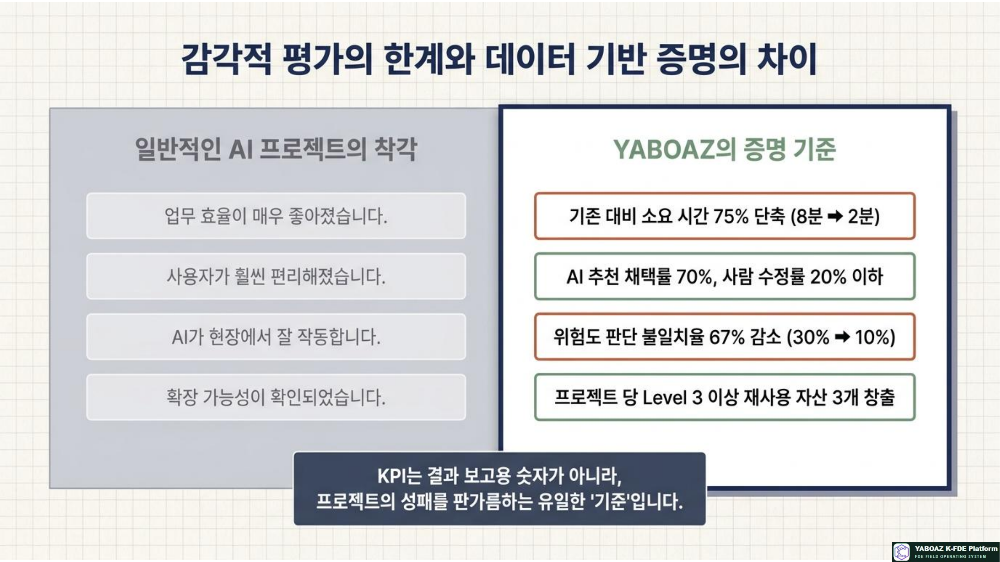
2. KPI 8대 영역
| 유형 | 측정 대상 | 대표 KPI | 연결 단계 |
|---|---|---|---|
| 속도 | 업무가 빨라졌는가 | 처리시간·판단시간·승인시간·응답시간 | Workflow·MVP |
| 품질 | 오류와 재작업이 줄었는가 | 오류율·누락률·재작업률·불일치율 | Evidence·AI |
| 비용 | 인력·운영 비용이 줄었는가 | 절감 인력시간·반복업무 감소율·운영비 | MVP·Scale |
| 사용성 | 실제 사용자가 쓸 수 있는가 | 과업 완료율·사용률·이탈률·만족도 | Bootcamp |
| AI 품질 | AI 추천을 신뢰할 수 있는가 | 정확도·채택률·수정률·반려율·근거 이해도 | Judgment·Agent |
| 거버넌스 | 책임 있게 통제되었는가 | 로그 완전성·승인 누락률·권한 위반·롤백 성공률 | Human Gate·Audit |
| 학습·역량 | 교육생과 조직이 성장했는가 | 사전·사후 향상도·산출물 완성률·포트폴리오 | Academy |
| 자산화 | 다시 사용할 수 있는가 | 자산 등록률·재사용률·시간 절감·SaaS 후보 | Assetization |
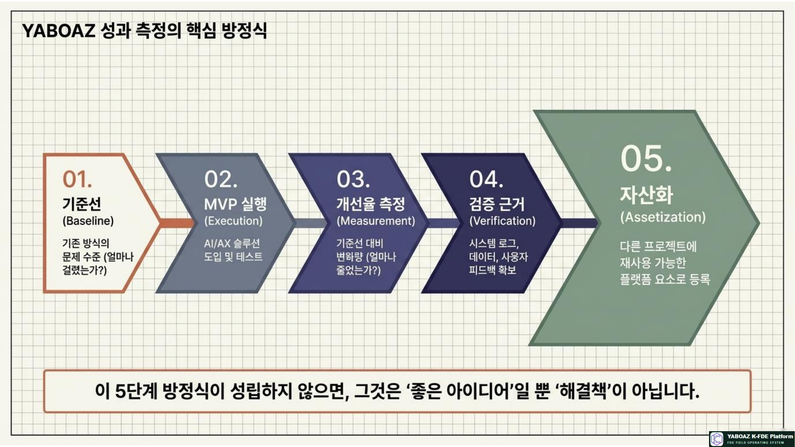
3. KPI 설계 프로세스
KPI는 프로젝트 마지막에 보고서용으로 붙이는 항목이 아닙니다. 고객 온보딩부터 데이터 출처와 측정 가능성을 확인하고, MVP와 Bootcamp에서 실제로 수집해야 합니다.
| 단계 | KPI 활동 | 완료 산출물 |
|---|---|---|
| 온보딩 | 고객 목표와 성공 기준 합의 | 성공 KPI 초안·책임자 |
| Evidence | 측정 가능한 로그·관찰·문서 확인 | 데이터 출처 목록 |
| 2A4·Discovery | 문제와 병목을 측정 문장으로 변환 | 기준선 측정 계획 |
| 설계 | 객체·상태·이벤트에 KPI 속성 연결 | 데이터 모델·로그 항목 |
| MVP | 판단·승인·실행·사용 이벤트 저장 | KPI 수집 기능 |
| Bootcamp | 기존 방식과 MVP를 같은 시나리오로 비교 | KPI 측정표 |
| 자산화 | 검증된 계산식과 목표를 템플릿화 | KPI Asset |
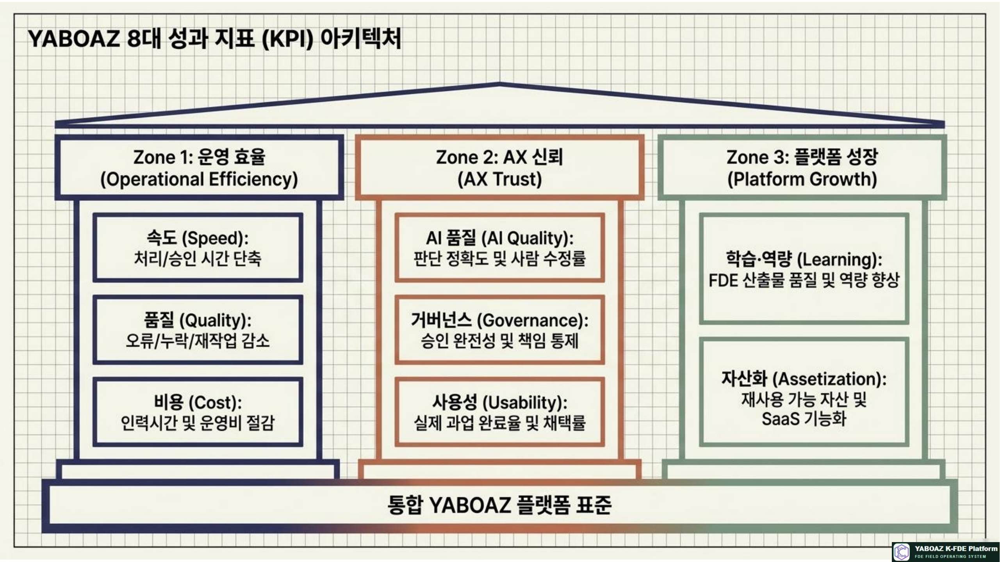
4. 속도·품질·비용 KPI
| 영역 | KPI | 정의 | 데이터 출처 |
|---|---|---|---|
| 속도 | 처리시간 | 이벤트 발생부터 완료까지 | 워크플로 상태 로그 |
| 속도 | 판단시간 | 데이터 확인부터 추천까지 | AI Judgment 로그 |
| 속도 | 승인시간 | 승인 요청부터 결정까지 | Human Gate 로그 |
| 속도 | 보고시간 | 실행 완료부터 보고서 생성까지 | 보고서·사용자 로그 |
| 품질 | 오류율 | 잘못된 판단·입력·처리 비율 | 오류·사후 평가 |
| 품질 | 누락률 | 필수 데이터·단계가 빠진 비율 | 체크리스트·감사 로그 |
| 품질 | 재작업률 | 같은 업무를 다시 처리한 비율 | 업무 이력 |
| 비용 | 절감 인력시간 | 기존 처리시간과 MVP 처리시간의 차이×건수 | 시간 로그·처리 건수 |
| 비용 | 반복업무 감소율 | 반복 입력·조회·보고 업무의 감소 비율 | 관찰·사용자 인터뷰 |
비용 계산 예시
기존 20분, MVP 8분, 월 300건이면 절감 시간은 (20−8)분×300건=3,600분, 즉 월 60시간입니다. 단, 인력시간을 비용으로 환산할 때는 고객이 합의한 인건비 기준과 제외 비용을 함께 기록해야 합니다.
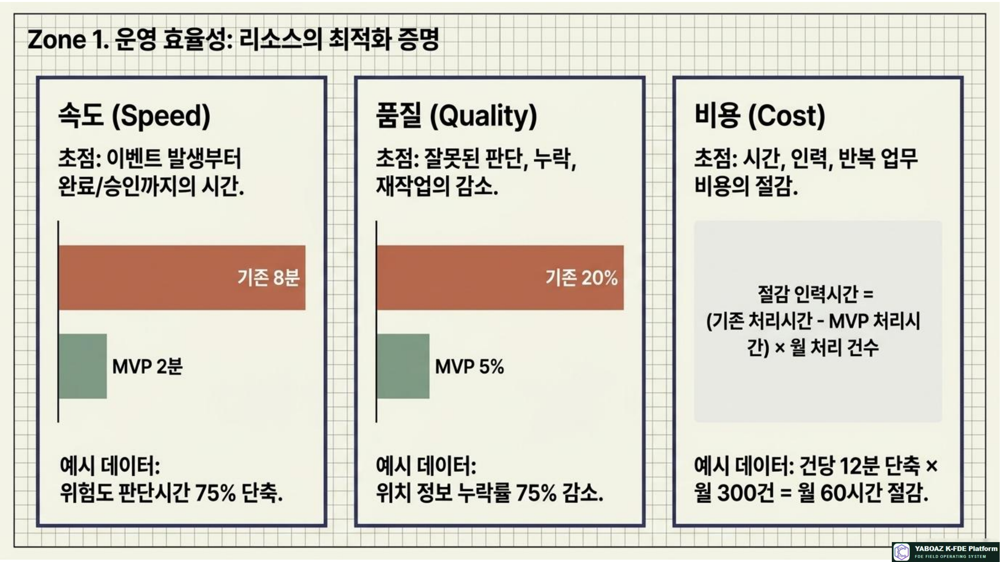
5. 사용성·AI 품질 KPI
| 영역 | KPI | 권장 목표 예시 | 해석 포인트 |
|---|---|---|---|
| 사용성 | 과업 완료율 | 90% 이상 | 화면을 실제 업무 끝까지 수행했는가 |
| 사용성 | 첫 사용 성공률 | 80% 이상 | 교육 없이도 핵심 흐름을 이해하는가 |
| 사용성 | 만족도 | 4.0/5.0 이상 | 편리함과 신뢰를 분리해 질문 |
| AI 품질 | 판단 정확도 | 85% 이상 | 정답 기준과 평가자 합의가 필요 |
| AI 품질 | 추천 채택률 | 70% 이상 | 추천을 승인·활용한 비율 |
| AI 품질 | 사람 수정률 | 20% 이하 | 수정이 항상 오류를 뜻하지는 않음 |
| AI 품질 | 근거 이해도 | 4.0/5.0 이상 | 결과보다 근거를 이해했는지 확인 |
| AI 안전 | 금지 판단 위반률 | 0% | 고위험 판단은 정확도보다 차단이 우선 |
| AI 안전 | 예외 보류율 | 데이터 부족 시 적정 보류 | 무리한 확정 판단을 하지 않는가 |
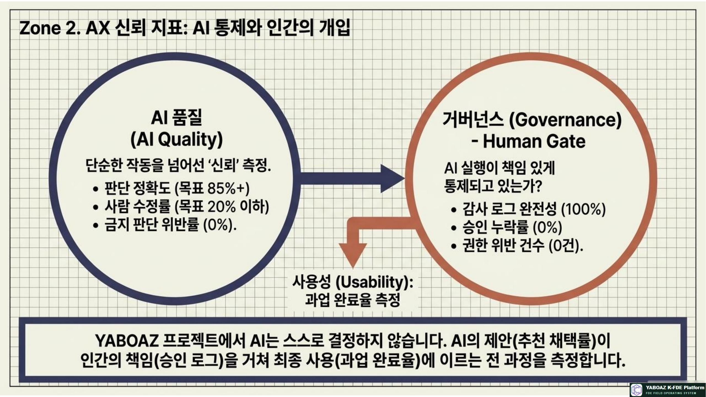
6. 거버넌스·학습·자산화 KPI
| 유형 | KPI | 목표 예시 | 측정 근거 |
|---|---|---|---|
| 거버넌스 | 승인 로그 완전성 | 100% | 승인자·시각·사유·결과 |
| 거버넌스 | 승인 누락률 | 0% | 승인 필요 실행 대비 무승인 실행 |
| 거버넌스 | 감사 로그 완전성 | 100% | 판단→승인→실행 연결 |
| 거버넌스 | 롤백 성공률 | 100% 목표 | 중단·복구 시나리오 기록 |
| 학습 | 산출물 완성률 | 90% 이상 | 13단계 제출 목록 |
| 학습 | 사전·사후 향상도 | 30% 이상 | 동일 루브릭 평가 |
| 자산화 | 자산 등록률 | 후보의 80% 이상 | 등록 카드·승인 이력 |
| 자산화 | 재사용률 | 50% 이상 | 다음 프로젝트 사용 이력 |
| 자산화 | 재사용 시간 절감 | 프로젝트별 측정 | 신규 작성 대비 복제·설정 시간 |
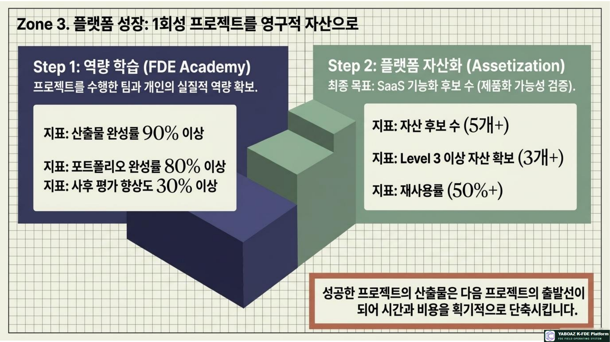
7. KPI 정의서 표준 양식
| 항목 | 작성 내용 | 품질 질문 |
|---|---|---|
| KPI ID·명 | 고유 ID와 이해하기 쉬운 이름 | 동일 지표와 중복되지 않는가? |
| 유형·연결 문제 | 속도·품질·AI 품질 등, 2A4 문제 | 핵심 문제와 직접 연결되는가? |
| 정의·목적 | 무엇을 왜 측정하는가 | 측정자마다 같은 의미인가? |
| 기준선·목표 | 기존값, 목표값, 통과 기준 | 같은 조건으로 비교 가능한가? |
| 공식·단위 | 계산식, 초·분·%, 점수 등 | 분모와 제외 조건이 명확한가? |
| 출처·주기 | 로그·설문·관찰, 실시간·일·주·월 | 데이터를 자동 또는 반복 수집할 수 있는가? |
| 책임자·시각화 | 수집·검토 책임자, 카드·그래프·보고서 | 누가 보고 어떤 결정을 내리는가? |
| 자산화 여부 | 공통 KPI 모델·산업별 설정·보류 | 다음 프로젝트에 재사용 가능한가? |
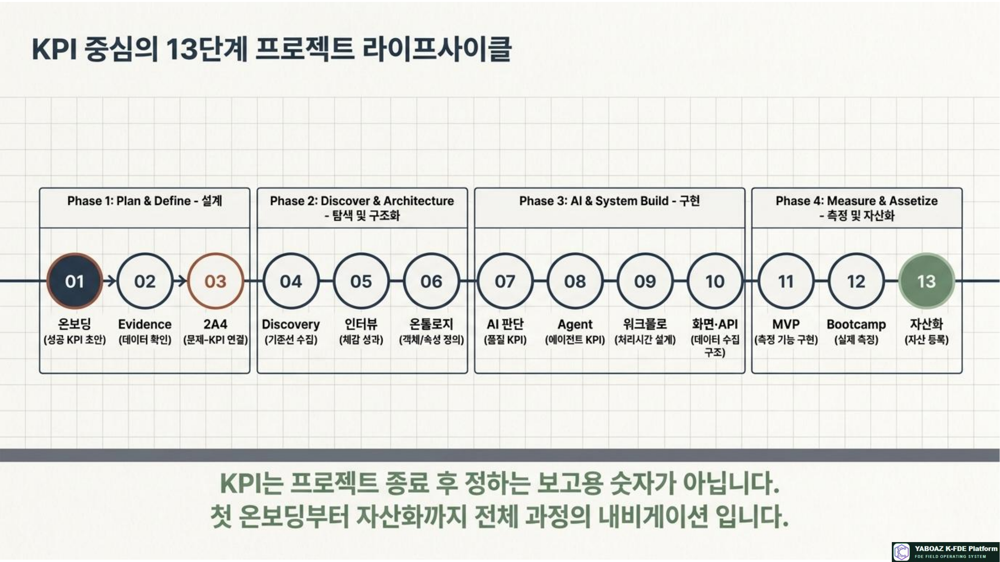
8. KPI 계산 공식
| KPI | 계산 공식 | 주의점 |
|---|---|---|
| 처리시간 단축률 | (기존 처리시간 − MVP 처리시간) ÷ 기존 처리시간 × 100 | 동일 난이도·동일 시나리오 비교 |
| 오류 감소율 | (기존 오류율 − MVP 오류율) ÷ 기존 오류율 × 100 | 오류 정의와 표본 수 기록 |
| 추천 채택률 | 승인·활용된 AI 추천 수 ÷ 전체 AI 추천 수 × 100 | 자동 승인과 수정 승인 구분 |
| 사람 수정률 | 수정된 AI 결과 수 ÷ 전체 AI 결과 수 × 100 | 수정 유형을 품질·정책·표현으로 분류 |
| 승인 누락률 | 무승인 실행 건수 ÷ 승인 필요 실행 건수 × 100 | 고위험 실행은 0% 목표 |
| 로그 완전성 | 필수 로그가 남은 실행 수 ÷ 전체 실행 수 × 100 | 필수 필드 목록을 먼저 고정 |
| 과업 완료율 | 완료 사용자 수 ÷ 전체 테스트 사용자 수 × 100 | 도움 요청·중단도 기록 |
| 자산 등록률 | 등록 자산 수 ÷ 후보 자산 수 × 100 | 등록보다 등급·재사용 이력도 확인 |
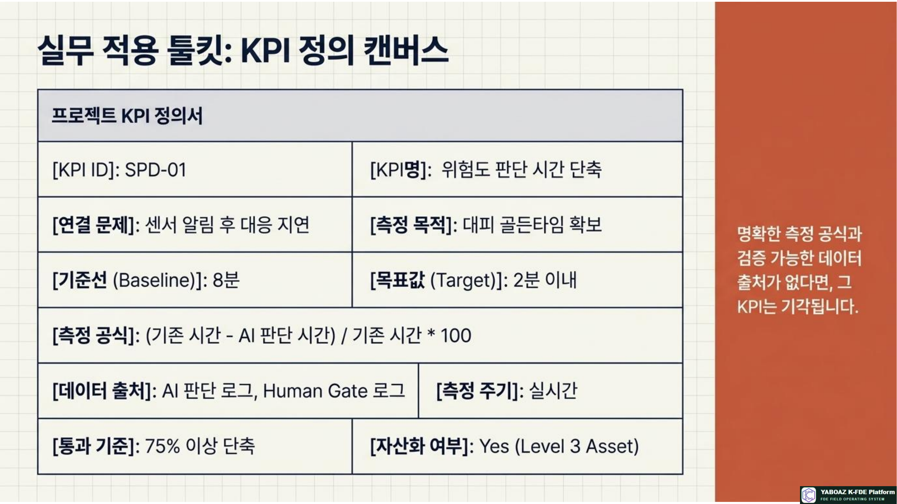
9. FireNavi KPI 예시
프로젝트 목표
화재 센서 알림 후 위치·위험도 판단과 대피 안내 승인 시간을 줄이고, AI 판단 근거와 실행 기록을 남깁니다.
| KPI | 기존 | 목표 | 측정 방법 |
|---|---|---|---|
| 센서 위치 확인 시간 | 4분 | 1분 이내 | 이벤트·공간 매핑 로그 |
| 위험도 판단 시간 | 8분 | 2분 이내 | AI Judgment 로그 |
| 승인 소요시간 | 5분 | 3분 이내 | Human Gate 로그 |
| AI 추천 채택률 | 없음 | 70% 이상 | 승인 결과와 수정 이력 |
| 로그 완전성 | 40% | 100% | 감사 로그 필수 필드 |
| 사용자 만족도 | 3.0/5 | 4.0/5 이상 | Bootcamp 설문 |
성과 보고 예시
위험도 판단 8분→2분은 75% 단축, 승인 5분→2분 30초는 50% 단축으로 기록합니다. 위치 확인 4분→45초는 81% 단축입니다. 단, 표본 수·테스트 시나리오·측정 기간을 함께 표기해야 성과 주장이 재현 가능합니다.
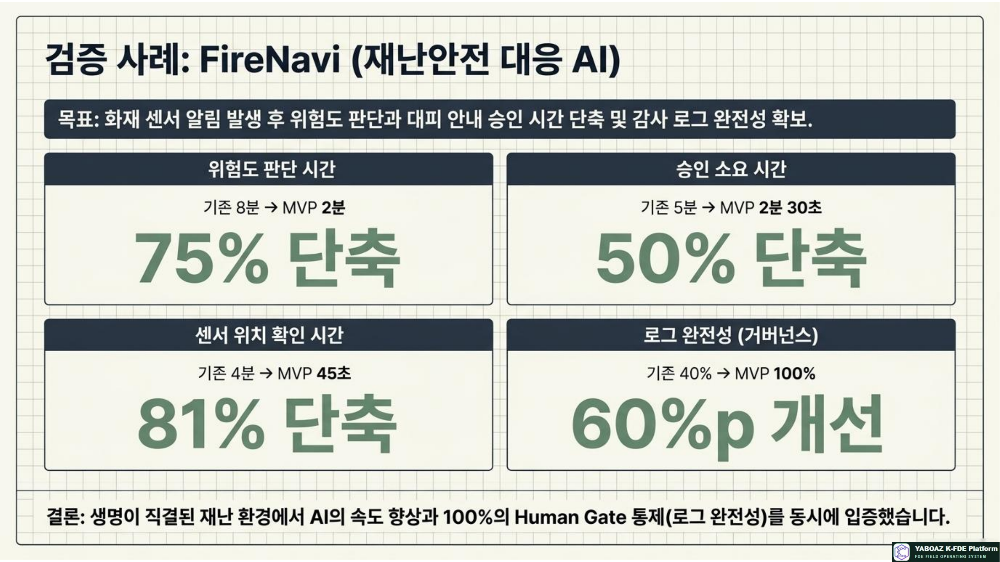
10. KPI 해석과 의사결정
| 관찰 결과 | 가능한 해석 | 다음 조치 |
|---|---|---|
| 처리시간은 줄었지만 오류가 증가 | 속도 개선이 품질 저하를 유발 | 자동화를 줄이고 검토 단계·입력 검증 보완 |
| 채택률은 높지만 수정률도 높음 | 초안은 유용하나 기준·표현이 불안정 | 수정 사유 분류 후 규칙과 프롬프트 개선 |
| 승인시간이 길고 반려율이 높음 | 근거·대안·책임 구조가 불충분 | Human Gate 화면과 승인 기준 개선 |
| 만족도는 높지만 사용률이 낮음 | 초기 반응은 좋으나 운영 정착 부족 | 교육·알림·업무 시스템 연동 강화 |
| KPI는 좋지만 자산화 후보가 적음 | 성과는 있으나 공통 구조가 분리되지 않음 | 고객 고유값과 공통 코어 재설계 |
| 오류율은 낮지만 로그가 부족 | 성과를 감사하거나 재현하기 어려움 | 로그 완전성을 필수 통과 기준으로 설정 |
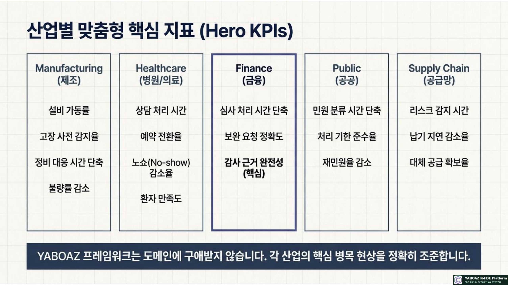
11. KPI 대시보드 구성
| 영역 | 표시 내용 | 의사결정 |
|---|---|---|
| 프로젝트 요약 | 핵심 KPI·목표·통과 여부 | 계속·개선·중단 판단 |
| 기준선 vs MVP | 기존값·현재값·개선율 | 성과 크기 확인 |
| AI 품질 | 정확도·채택률·수정률·근거 이해도 | Agent 개선 우선순위 |
| Human Gate | 승인시간·반려율·승인 누락 | 책임 구조와 화면 개선 |
| 워크플로 | 상태별 체류시간·예외·SLA | 병목 구간 개선 |
| 사용자 반응 | 완료율·사용률·만족도·피드백 | 운영 정착·교육 결정 |
| 자산화 | 후보·등록·등급·재사용·SaaS 후보 | 다음 프로젝트 추천 |
| 리스크 | 기준 미달·금지 위반·로그 누락 | 즉시 중단·에스컬레이션 |
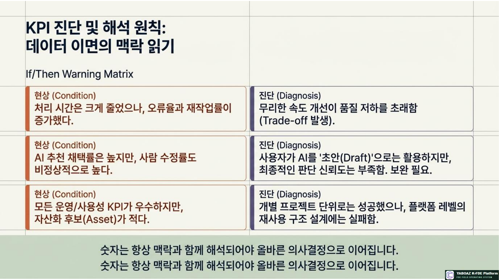
12. KPI 완료 체크리스트
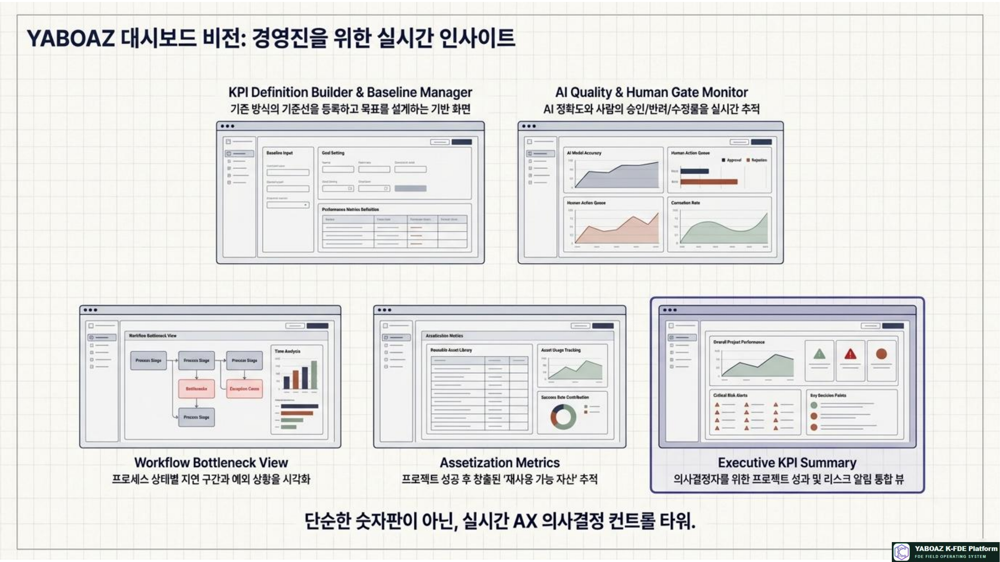
13. 교육 실습 구성
| 시간 | 실습 내용 | 산출물 |
|---|---|---|
| 30분 | KPI 8대 유형과 좋은 지표의 조건 이해 | KPI 후보 목록 |
| 40분 | 문제정의·Evidence와 KPI 연결 | 문제-KPI 매핑표 |
| 40분 | 기준선·목표값·통과 기준 설정 | 기준선 측정표 |
| 40분 | 계산 공식과 데이터 출처 작성 | KPI 정의서 |
| 40분 | AI·Human Gate·거버넌스 지표 설계 | AI 품질·감사 KPI |
| 40분 | 대시보드와 성과 보고서 구성 | 성과 대시보드 |
| 50분 | 발표·피드백·자산화 판단 | 개선 백로그·KPI Asset |
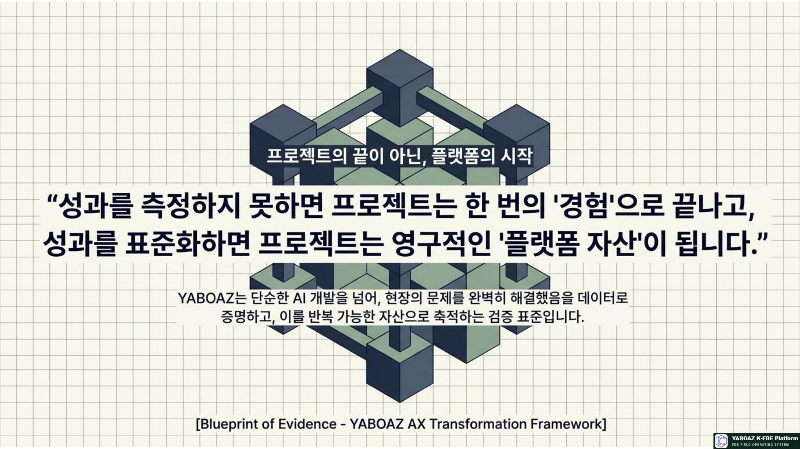
14. 평가 기준
| 평가 항목 | 배점 |
|---|---|
| KPI가 문제정의·Evidence와 연결되는가 | 15 |
| 기준선과 목표값이 포함되었는가 | 15 |
| 계산 공식과 데이터 출처가 명확한가 | 15 |
| AI 품질과 Human Gate KPI가 포함되었는가 | 15 |
| 속도·품질·사용성·거버넌스가 균형적인가 | 10 |
| KPI 해석과 한계가 제시되었는가 | 10 |
| 성과 보고가 의사결정과 연결되는가 | 10 |
| 자산화 KPI와 재사용성이 포함되었는가 | 10 |
| 합계 | 100 |
성과를 측정하지 못하면 프로젝트는 경험으로 끝납니다. 기준선과 개선율, 로그와 사용자 검증, 자산화 지표를 표준화하면 프로젝트는 다음 고객과 산업에 재사용 가능한 플랫폼 자산이 됩니다.